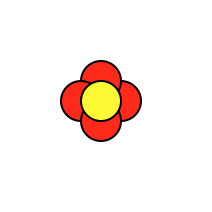

CMU 15-112 Spring 2018: Fundamentals of Programming and Computer Science
Lab 4 (Friday 9-Feb)
These problems should be completed during your scheduled lab on Friday. To get full credit on the lab portion of the homework, you must complete the basic problem, attempt the advanced problem, and show your work to one of the lab TAs. You may work on these problems collaboratively or individually, as you wish (unless the instructions state otherwise).
Do not use recursion this week. Do not hardcode the test cases in your solutions.
- Basic 1: Pair Programming!
Find a partner and use pair programming to solve the following two problems. One partner should do the typing for #1, while the other does the typing for #2. Do not work on the problems simultaneously- you should be collaboratively solving both problems!
- Problem 1: moveToBack
Write the function moveToBack(a,b) which takes two lists, a and b, and destructively modifies a so that each element of a that appears in b moves to the end of a in the order that they appear in b. The rest of the elements in a should still be present in a, in the same order they were originally. The function should also return a. Do this without creating another list of length len(a). You are guaranteed that b will not contain duplicate elements.
def testMoveToBack(): print("Testing moveToBack...", end="") assert(moveToBack([2, 3, 3, 4, 1, 5], [3]) == [2, 4, 1, 5, 3, 3]) assert(moveToBack([2, 3, 3, 4, 1, 5], [2, 3]) == [4, 1, 5, 2, 3, 3]) assert(moveToBack([2, 3, 3, 4, 1, 5], [3, 2]) == [4, 1, 5, 3, 3, 2]) assert(moveToBack([2, 4, 2, 3], [7, 8, 0]) == [2, 4, 2, 3]) # test that method is destructive a = [4, 2, 6, 8, 6, 3] b = [8, 6, 1] moveToBack(a, b) assert(a == [4, 2, 3, 8, 6, 6]) print("Done!") - Problem 2: drawFlower
Write the function drawFlower(canvas, width, height, numPetals, petalSize, petalColor) which is called by runDrawing and which draws a flower based on the provided number of petals, size of the petals, and petal color. The inner part of the flower should always be yellow, with its size determined by the width and height of the window.
When we call drawFlower(canvas, 500, 500, 6, 100, "purple"), we should get this:
When we call drawFlower(canvas, 300, 300, 3, 50, "cornflowerblue"), we should get this:
And when we call drawFlower(canvas, 100, 100, 4, 10, "red"), we should get this:

When you're done with both problems, raise your hand to let the TA know. - Problem 1: moveToBack
- Advanced: drawHistogram
Write the function drawHistogram(canvas, width, height, bins, data) which draws a histogram with the given number of bins based on the given data (where data is a list of numbers). A histogram is a type of graph that takes a set of data points and separates it into bins, where each bin shows the number of points that occurred within a certain threshold. For example, a histogram over three bins might show values from 0 to 10, 10 to 20, and 20 to 30. For your histogram the graph should be clearly displayed and the axes should be labeled, but you can decide what the histogram should look like otherwise. As an example, here's a histogram we generated based on two dice rolled and added 100 times: